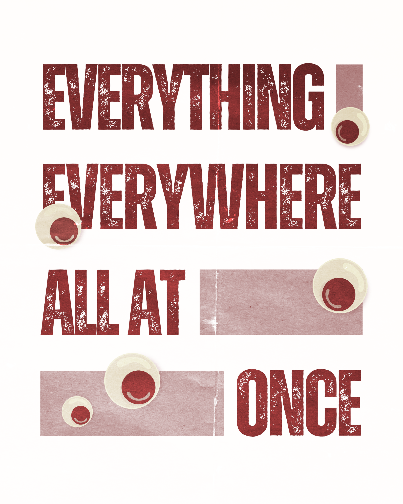

1

“Everything Everywhere All at Once”
Dir. Daniel Kwan & Daniel Scheinert • 2022
“In another life, I would’ve really liked just doing laundry and taxes with you,” Waymond Wang (Ke Huy Quan) tells his wife, Evelyn Wang (Michelle Yeoh), in an alternate timeline after an IRS audit triggers a cross-multiverse adventure. “Everything Everywhere All at Once” superimposes the everyday struggles of the Wang family onto the grand, expansive backdrop of the multiverse. Behind the lustrous veil of showstopper action set pieces, sentient rocks, and hot dog fingers is a story that means to reckon with the ever-intensifying force of modernity, generational trauma, and the everything bagel of despair that comes for all of us.
Points: 13